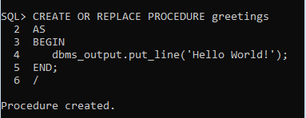

Procedures
In this chapter, we will discuss Procedures in PL/SQL. A subprogram is a program unit/module that performs a particular task. These subprograms are combined to form larger programs. This is basically called the 'Modular design'. A subprogram can be invoked by another subprogram or program which is called the calling program.
A subprogram can be created −
At the schema level
Inside a package
Inside a PL/SQL block
At the schema level, subprogram is a standalone subprogram. It is created with the CREATE PROCEDURE or the CREATE FUNCTION statement. It is stored in the database and can be deleted with the DROP PROCEDURE or DROP FUNCTION statement.
A subprogram created inside a package is a packaged subprogram. It is stored in the database and can be deleted only when the package is deleted with the DROP PACKAGE statement. We will discuss packages in the chapter 'PL/SQL - Packages'.
PL/SQL subprograms are named PL/SQL blocks that can be invoked with a set of parameters. PL/SQL provides two kinds of subprograms −
Functions − These subprograms return a single value; mainly used to compute and return a value.
Procedures − These subprograms do not return a value directly; mainly used to perform an action.
Creating a Procedure
A procedure is created with the CREATE OR REPLACE PROCEDURE statement. The simplified syntax for the CREATE OR REPLACE PROCEDURE statement is as follows −
CREATE [OR REPLACE] PROCEDURE procedure_name
[(parameter_name [IN | OUT | IN OUT] type [, ...])]
{IS | AS}
BEGIN
< procedure_body >
END procedure_name;
Where,
procedure-name specifies the name of the procedure.
[OR REPLACE] option allows the modification of an existing procedure.
The optional parameter list contains name, mode and types of the parameters. IN represents the value that will be passed from outside and OUT represents the parameter that will be used to return a value outside of the procedure.
procedure-body contains the executable part.
The AS keyword is used instead of the IS keyword for creating a standalone procedure.
Example
